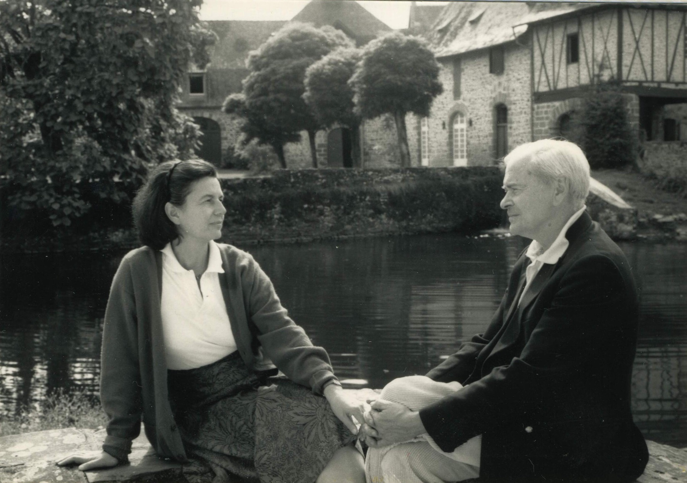
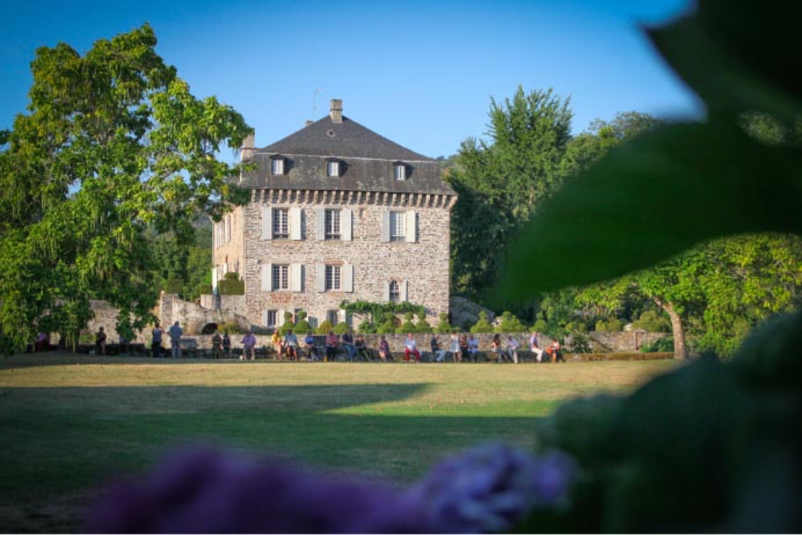
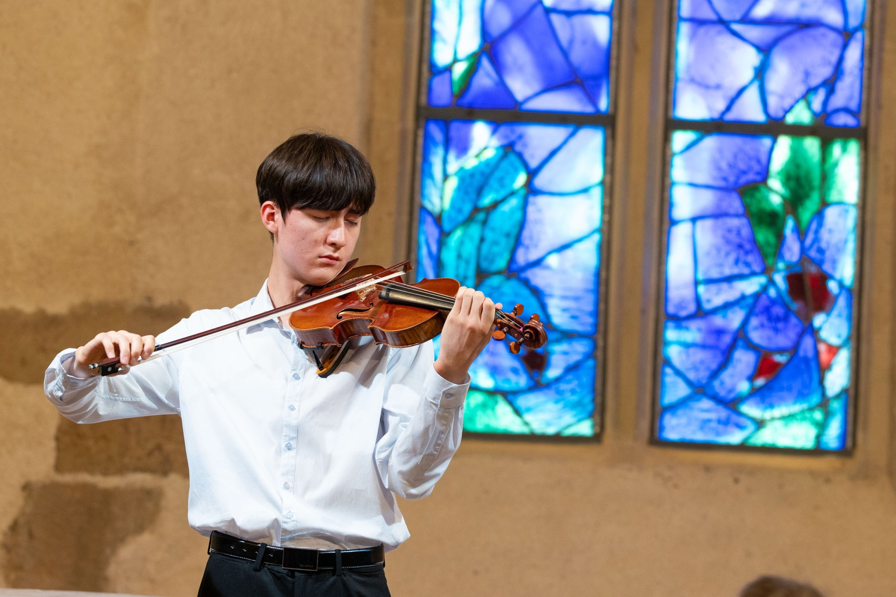
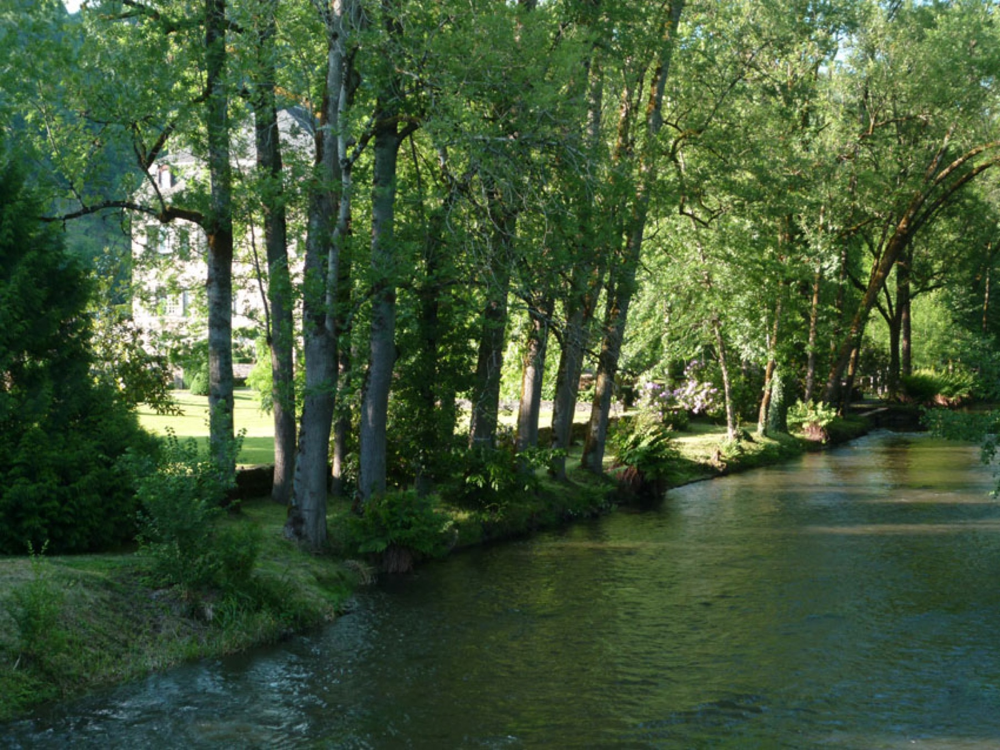
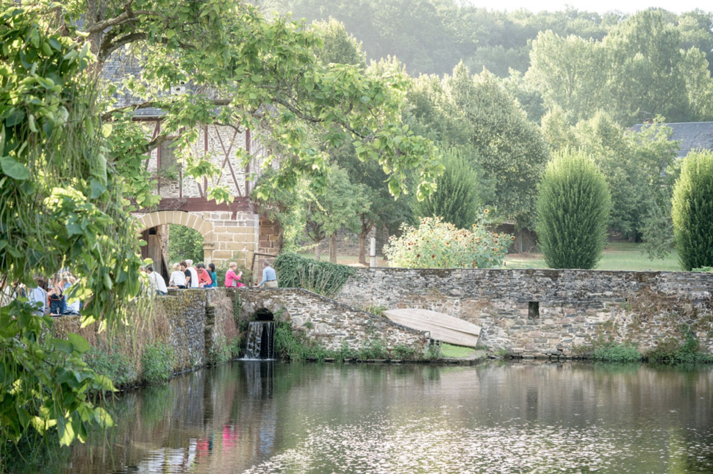
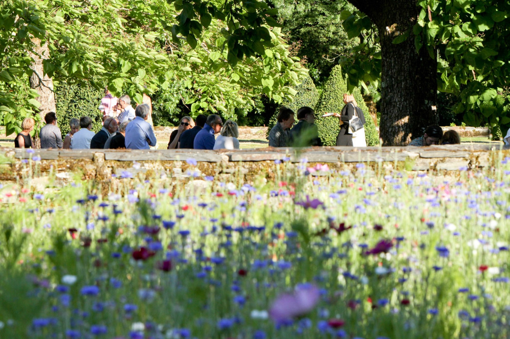

Musique classique et opéra en Corrèze
Un château, une rivière et la musique
Le Festival de la Vézère prend sa source au Château du Saillant, un domaine empli de charme et de poésie qui lui a donné son souffle, son énergie et son âme.
Dès 1320, la dynastie de Lasteyrie du Saillant occupe le domaine dont la bâtisse fut construite un siècle plus tôt. Véritable forteresse, elle compte alors dix-sept tours, un pont-levis et des douves, dont il ne reste aujourd'hui que des traces et quelques remparts. Une vingtaine de générations s'y succèdent jusqu'en 1854, date à laquelle la demeure est vendue.
Mais elle ne quittera pas le giron familial bien longtemps. Après une génération passée hors de la famille et grâce à un heureux hasard, Guy de Lasteyrie du Saillant, descendant direct des propriétaires, et sa femme Isabelle rachètent le château en 1970. La demeure historique retrouve alors peu à peu ses lettres de noblesse et fait l'objet d'innombrables travaux.
Le parc qui entoure le château abrite de très beaux arbres : séquoias, chênes, érables, tulipiers de Virginie, frênes et un Ginkgo Biloba, qui est sans doute l'un des plus anciens de France.

Fondateurs
En 1970, Guy et Isabelle de Lasteyrie du Saillant rachètent le château familial et lui redonnent vie. C'est de cet attachement profond au domaine et à la rivière qui le borde qu'est né, quelques années plus tard, le Festival de la Vézère.
Un domaine vivant
La Grange du Château du Saillant, où le silence n'a jamais prise, portée par le bruissement du vent et l'écoulement de l'eau, est devenue le lieu de toutes les rencontres, dans une célébration intimiste et féérique où les notes semblent trouver un écho naturel.
On prend plaisir à flâner dans le jardin à la française orné de buis taillés sur les pourtours de la façade principale et qui se compose également de rosiers. Le domaine du Saillant est un site enchanteur, entouré de vastes douves d'eaux alimentées par de joyeuses cascades que l'on aime traverser par un petit pont, nous aventurant sur une petite île à l'atmosphère romantique et dépaysante.
Un havre de paix naturel où diverses plantations typiques de cette région s'épanouissent à l'instar des rhododendrons, tilleuls et osmondes royales. Telle une évidence à l'attachement profond à ces lieux, le festival porte le nom de la Vézère, la rivière qui serpente au pied de la maison.

Un concert du Festival de la Vézère devant le château
Un écrin pour la musique
Le village du Saillant compte également une chapelle remarquable, véritable emblème de la région. C'est l'une des rares chapelles au monde à être entièrement décorée par des vitraux de Chagall.
Souvent comparé à Pablo Picasso, l'artiste a en effet imaginé les six vitraux de l'église, lesquels ont été exécutés par le maître verrier Charles Marcq entre 1978 et 1981. Teintés de bleus ou en grisaille, ils représentent le paradis, l'agneau, la vigne, le poisson et, pour le vitrail de l'oculus, un bouquet symbole d'amour, de paix et de sérénité.
Un site intime qui fait aussi office d'écrin idéal aux mélodieuses vibrations du Festival.

Récital dans la chapelle, devant les vitraux de Marc Chagall

La Vézère, au pied du château

Entracte au bord des douves

Le parc du château, en fleurs
Le festival aujourd'hui
Chaque été, le Festival de la Vézère réunit près de 1 000 concerts et représentations dans plus de 35 communes et sites historiques de Corrèze. Retrouvez la programmation complète et la billetterie sur son site dédié.
Voir le site du festival